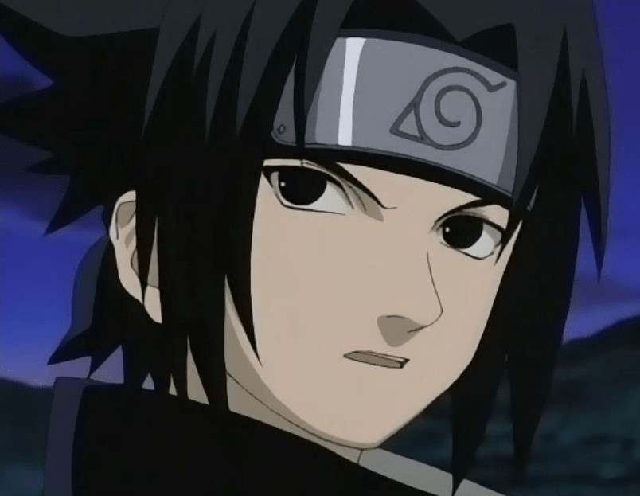
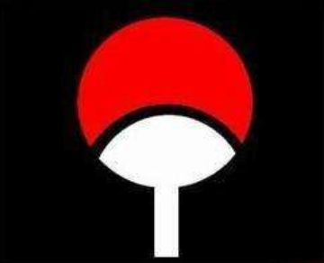
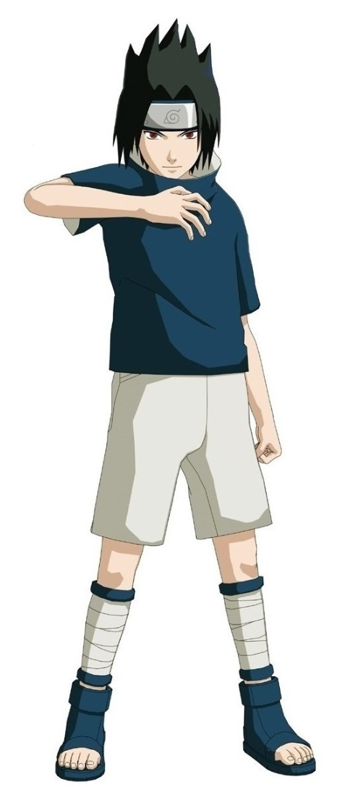
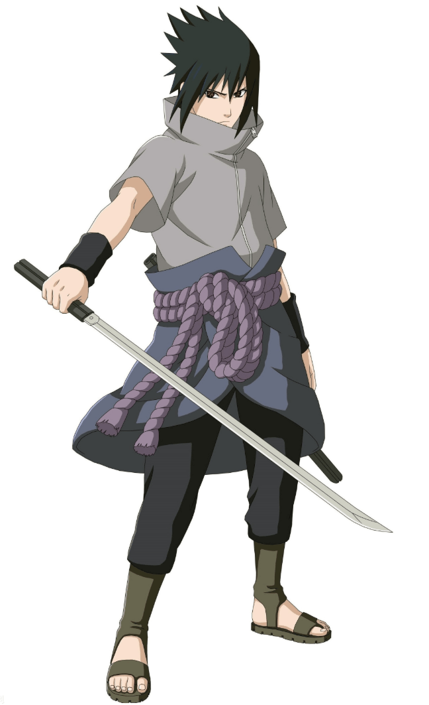
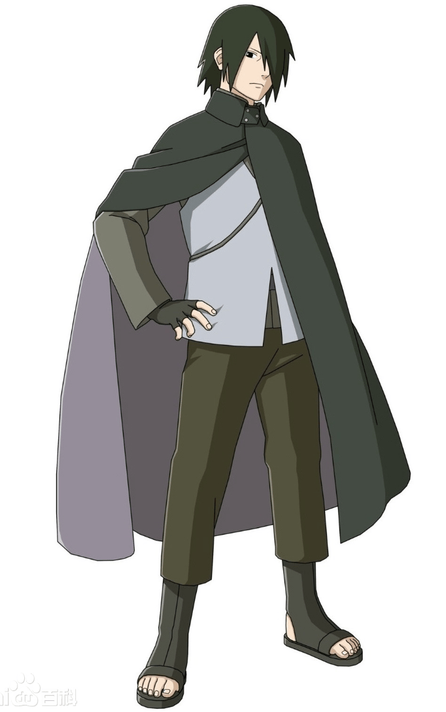

佐助 |
 |
|---|
|
宇智波一族原是木叶中最强大的家族之一，标志为火扇，
意为手持火焰之扇控制火焰能力极为突出的人。 |
 |
“宇智波”日语发音是うちは，而“団扇”一词在日文中发音为“うちわ”，参考宇智波一族的家徽， 可见“宇智波”最为接近“团扇”之意。在漫画第500话中提到， “佐助”的名字取自日本传奇忍者猿飞佐助（真田十勇士之一），同时，“助”一字在日本名字中则是“次官”的意思， 也有“第二”的含义，这恰好与佐助在家中的兄弟排行地位一致。
佐助的原型是日本神话中的建御雷神，建御雷神是日本神话中的雷神、刀剑之神、弓术之神，与佐助的能力相符合。 《古事记》中记载，建御雷神和天鸟船神曾协力征讨出云国，对应剧情中佐助和鼬联手对战药师兜。 同时日本神话里最著名的建御雷神与建御名方神的角力，最后建御名方神双手折断， 对应剧情中鸣人、佐助的终末之谷决战，最后两人各断一臂。
佐助的衣着外貌具有明显东方特质，他继承了父母的 黑发黑瞳，精致的五官则与母亲相似。佐助皮肤白皙，他的头发与刘海延长至尾部逐渐变为碎发。 战斗时，眼睛会变化为写轮眼，图案随着写轮眼的不同形态而变化。
|  |
第一部里，佐助身穿宇智波一族的传统服饰：高领的深蓝色短袖衬衫、白色袖套与短裤， 衣服背面是一族族徽，腰间与右腿佩戴忍具袋。中忍考试后期，佐助穿着一套黑色连体服饰， 右腿缠绕白色绷带，刘海变得更长。忍者学校毕业后，佐助前额佩戴蓝底的木叶标识。 住院期间佐助身穿深灰色短袖，有一段时间没佩戴木叶护额。 终末之谷的战斗中，佐助的护额被鸣人划出一条裂痕，并从前额滑落。从那时起，佐助再没佩戴过它。 |
|  |
第二部里，佐助个子明显长高，身穿纯白和服、深蓝色裤子。和服背面是小型的一族族徽，深灰护臂
覆盖他的前臂一直延伸至手掌，腰间布上系着紫色绳腰带，并插着一把草薙剑。与迪达拉一战后，
佐助上身服饰变化为无袖的深灰色背心，披着一件黑色斗篷。佐助拥有“通灵术·雷光剑化”，因此不再佩戴忍具袋，
而是手腕缠绕白色绷带，通灵忍具时解开绷带，手腕显示“剣”字型特殊纹章。
|
|  |
十几年后，佐助的服饰变为了灰色上衣配蓝白色马甲，左边的袖子仍然空荡荡的，右手戴忍者手套， 下身穿深灰色长裤和新式忍者靴， 身披一件黑色长袍，他将刘海弄长并遮住左眼的轮回眼，其样貌比较像当年的斑。 |
佐助是一个具有强大意志的人。在忍者学校，才貌双全的佐助很受女生欢迎，但他丝毫未受影响，为自己的目标不断提高能力。后来他以第一名的成绩在忍者学校毕业，是全村最为期待的头号优等生。“我可是拼了命去做的，不要用‘天才’两个字抹杀掉我的努力！”这是佐助对自己的诠释。 在日常生活中，佐助也不会行为散漫，他对自己严格要求。当三代目火影与卡卡西第一次来到佐助的房间，展现在眼前的是十分干净、整洁的环境。 外冷内热
佐助是一个外冷内热的人。他深爱家人，但并不把这份感情挂在嘴边，而是低调地赋予实际行动。为了获得父亲认可，他在忍者学校努力修炼，取得了优异的成绩。当看到父亲与哥哥之间冷战，年幼的佐助不知内情，但渴望父亲和哥哥解除误会，维护家庭和谐。正是基于对家庭、家族的那份爱，佐助在遭遇灭族后，人生发生转变。面对一夜间死去的族人，佐助内心无比伤感、愤怒，从此将内心封闭起来，一心希望获得强大的力量，早日为宇智波一族报仇雪恨。 佐助是一个敏感而不愿表达的人，所能感受到的东西很多，但他很少表达。第一部中岸本齐史对佐助的心理刻画大多集中在“对自己弱小无法报仇而愤恨”，到了疾风传更是几乎没什么文字类心理说明。但很多时候岸本会给佐助一个神态特写，很明显地能让人感到，他一定在想什么。直到最后几话，才用大量的内心独白，向读者阐释了佐助这些年的想法与感情。 独立纯粹
佐助是个思想独立而又十分纯粹的人。他从来不会盲目听从那些他认为不对的命令，不过一旦他认准了某件事情，那么就不会在乎别人的看法。下忍考试时，卡卡西不许佐助和樱把便当给鸣人吃，樱乖乖听话，佐助看到此时卡卡西不在，自己好心把便当给了鸣人。第一次与再不斩对决，卡卡西命令三人快逃，佐助却坚定地拒绝执行命令。事后结果证明，佐助这两次都做了正确的判断。 因为自己被鼬打败，使佐助意识自己力量的不足，为了向鼬复仇，佐助义无反顾地选择了来到大蛇丸身边，他无法容忍自己力量的弱小，毅然决然地选择离开木叶获得强大的力量。那时候的佐助，为了复仇甚至不惜杀死与自己同生共死的香燐，可以说，当时的他是一个不折不扣的复仇者。 再次与鼬相遇后，佐助的思想得到了升华，他不再纠结于复仇本身，而是想知晓一切，靠自己得出结论，以自己的意志和双眼去辨清结论。鼬也承认了佐助的力量，在灵魂升天前对佐助说：“或许如今的你，能改变父母，改变宇智波。”这也是大蛇丸被佐助复活后，选择帮助佐助的根本原因：想要见证一个不同于自己，属于佐助的生存方式以及未来。
佐助具有敏锐直觉与判断力，在战斗中不忘冷静思考，具有准确看清对手的惊人洞察力，斑在战斗时便称赞佐助。同时，佐助的战术运用层面广，拥有能选择最有效忍术和手段的冷静判断力，并活用忍术及忍具。 佐助具有学习和创新意识，他在复制了李的动作后很快创造出了属于自己的全新体术。在跟随大蛇丸的两年时间，佐助以千鸟为基础，创造出了一系列新的雷遁忍术。 佐助具有领导能力，能挖掘具有特殊才能的忍者，他很清楚每一位团队成员想要的是什么，从而能够快速获得他们的帮助。疾风传中，佐助成功地领导“鹰”参与多次行动。 佐助的左右手均能灵活使用，他通常用右手拿草薙剑，同时左手发动忍术。苦无袋绑在左腿处。当六道仙人让佐助举起惯用手时，他选择了左手。